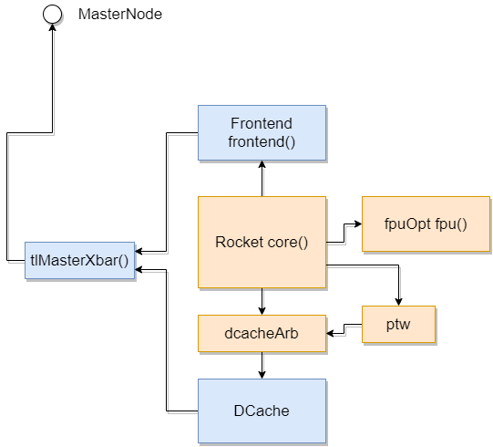

Hardware Description Language Chisel & Diplomacy Deeper dive
- Presenter：msyksphinz (Author of FPGA development diary)
- @msyksphinz_dev
- https://msyksphinz.hatenablog.com
About Presenter
- Interesting Topic: Computer Architecture, Low-Layer Programming
- X86 (Studying via implementation of QEMU with Rust)
- MIPS (Studied through implementation Instruction Set Simulator)
- ARM (Studying ...)
- RISC-V
- My work : Hardware development
- General Processor, Accelerator, and so on ...
- HDL skill: Verilog, System Verilog (except UVM), Chisel
- My first HDL I studied is VHDL (already I forget)
- When I was a student, I implemented MIPS CPU by myself and run it on Spartan-3 FPGA.
-
Low Layer Programming
-
I started my work by analyzing and verifying the performance of general-purpose CPUs, so I can do some low-layer programming (I think).
- I like QEMU and LLVM.
- When I learn a new ISA, I start by building an instruction set simulator!
- Other
- Programming Languages: C++ / Ruby / Rust
- I'm addicted to Rust lately... Hey, isn't it full of
unsafewhen you write low-layer stuff? :). - FPGA: I only know Xilinx & haven't touched it for a few years now (even though this is an FPGA development diary)
Are you using Chisel?

- A hardware building language based on Scala.
- Not a high-level synthesis language.
- SiFive's RISC-V IP use Chisel
- Rocket-Chip : https://github.com/chipsalliance/rocket-chip
-
BOOM : https://github.com/riscv-boom/riscv-boom
-
Chisel Basics : "Chiselを始めたい人に読んで欲しい本" https://nextpublishing.jp/book/12162.html
How Chisel generates Verilog
-
Chisel is a Scala DSL, so the Chisel Compiler is written in Scala.
-
Chisel Compiler generates an intermediate language called FIR (Flexible Interpretation Representation).
-
FIR has nothing to do with Scala's syntax
-
FIR is converted to Verilog using a converter called FIRRTL
-
FIRRTL is also written in Scala (FIR is not a Scala DSL, so I don't think it needs to be written in Scala...) [^circt].
st=>inputoutput: Chisel(Scala)
op1=>subroutine: Chisel Compiler
io=>inputoutput: FIR(IR)
sub1=>subroutine: FIRRTL Compiler
cond=>inputoutput: Verilog
st(right)->op1(right)->io(right)->sub1(right)->cond
cond(yes)->e
cond(no)->op1
[^circt]: As a replacement for FIRRTL, a Chris Lattner-led tool called "CIRCT" has been developed using LLVM and MLIR https://github.com/llvm/circt
What's good about Chisel?
- You can use the features of Scala, a software description language.
- → This results in Verilog engineers sometimes having to write seemingly incomprehensible and unintelligible statements.
Example: FIR Filter

Answer 1. By beginner
// stage size is temporary 4
class My4ElementFir(b0: Int, b1: Int, b2: Int, b3: Int) extends Module {
val io = IO(new Bundle {
val in = Input(UInt(8.W))
val out = Output(UInt(8.W))
})
val x_n1 = RegNext(io.in, 0.U)
val x_n2 = RegNext(x_n1, 0.U)
val x_n3 = RegNext(x_n2, 0.U)
io.out := io.in * b0.U(8.W) + x_n1 * b1.U(8.W) +
x_n2 * b2.U(8.W) + x_n3 * b3.U(8.W)
}
Answer 2. Written by me (hardware enginner)
Almost Verilog!
class MyManyDynamicElementVecFir(length: Int) extends Module {
val io = IO(new Bundle {
val in = Input(UInt(8.W))
val valid = Input(Bool())
val out = Output(UInt(8.W))
val consts = Input(Vec(length, UInt(8.W)))
})
val taps = Reg(Vec(length, UInt(8.W)));
for (i <- 0 until length) {
if (i == 0) { when(io.valid) { taps(i) := io.in } }
else { when(io.valid) { taps(i) := taps(i-1) } }
}
val w_fir_res = Wire(Vec(length, UInt(8.W)))
for (i <- 0 until length) {
val w_tap_mul = Wire(UInt(8.W))
w_tap_mul := taps(i) * io.consts(i)
if (i == 0) { w_fir_res(i) := 0.U }
else { w_fir_res(i) := w_tap_mul + w_fir_res(i-1) }
}
io.out := w_fir_res(length-1)
}
Answer 3. Written by Chisel Expert
- Can't understand?
https://github.com/freechipsproject/chisel-bootcamp/blob/master/2.5_exercise.ipynb
class MyManyDynamicElementVecFir(length: Int) extends Module {
val io = IO(new Bundle {
val in = Input(UInt(8.W))
val valid = Input(Bool())
val out = Output(UInt(8.W))
val consts = Input(Vec(length, UInt(8.W)))
})
val taps = Seq(io.in) ++ Seq.fill(io.consts.length - 1)(RegInit(0.U(8.W)))
taps.zip(taps.tail).foreach { case (a, b) => when (io.valid) { b := a } }
io.out := taps.zip(io.consts).map { case (a, b) => a * b }.reduce(_ + _)
BTW, Why did Chisel choose Scala?
- Rumor: When we built the first version of Chisel at UCB, we used Ruby and it compiled so slowly that we gave up.
-
Well, I don't think Scala compiles fast either.
-
Scala's feature: crazy operator overrides
- Example 1 :
A := Bin normal Chisel description andA := Bin TileLink have different meanings
/** Connect this $coll to that $coll mono-directionally and element-wise.
*
* This uses the [[MonoConnect]] algorithm.
*
* @param that the $coll to connect to
* @group Connect
*/
final def := (that: Data)(implicit sourceInfo: SourceInfo, connectionCompileOptions: CompileOptions): Unit = this.connect(that)(sourceInfo, connectionCompileOptions) // scalastyle:ignore line.size.limit
- Example 2. Crazy AXI Bus connection (
src/main/scala/subsystem/Ports.scala)
mbus.coupleTo(s"memory_controller_port_named_$portName") {
(memAXI4Node
:*= AXI4UserYanker()
:*= AXI4IdIndexer(idBits)
:*= TLToAXI4()
:*= TLWidthWidget(mbus.beatBytes)
:*= _)
}
Back on topic: Why use Chisel?

Rant: If you want to make regular hardware, Verilog is definitely more convenient: ！！！！ .
- Easier to write tests? → Isn't UVM more sophisticated?
- Does it have better error detection? → The simulator is good enough to detect common writing errors.
- Reason for using Chisel in the cluster as seen by me
- It's unavoidable because Rocket-Chip is using it.
- I want to write something in a new language and have everyone say "wow".
So what's the use of Chisel?
- The evolution of technology has far outpaced the cycle of hardware design.
- Hardware engineers, are you catching up with the evolution of technology?
- It takes two to three years to make a chip. It takes two to three years to make a chip. Can you make a cutting-edge AI chip with this?
- In the age of DSA, we have to build in low volume, high variety.
- (Not that it matters.) The time should come when chips can be easily woken up by the weak in small quantities and high variety.
- How do you manage the "complexity" of hardware?

An example of how to use Chisel: Diplomacy
- Parameter Negotiation Framework for generating parameterized protocol implementation.

Where did Diplomacy come from?
- Andrew Waterman's PhD Thesis
- Design of the RISC-V Instruction Set Architecture
- https://people.eecs.berkeley.edu/~krste/papers/EECS-2016-1.pdf
- Yunsup Lee's PhD Thesis
- Decoupled Vector-Fetch Architecture with a Scalarizing Compiler
- https://people.eecs.berkeley.edu/~krste/papers/EECS-2016-117.pdf
- Henry Cook's PhD Thesis
- Productive Design of Extensible On-Chip Memory Hierarchies.
- The basic idea of Diplomacy is described in this paper
- https://www2.eecs.berkeley.edu/Pubs/TechRpts/2016/EECS-2016-89.pdf
What we want to achieve with Diplomacy
- Flexible configuration using a single design
- Multiple CPU configurations (RV64 / RV32) from a single design
- Multiple CPU configurations (RV64 / RV32)
- Multiple bus and cache configurations
- Number of cores, bus width, cache size, SoC configuration
One example: SiFive's Core IP Generator
- https://scs.sifive.com/core-designer/

If you want to develop with Chisel + Diplomacy, use IntelliJ IDEA!
Auto Completion feature is mandatory.

Misunderstandings: Diplomacy can only be used with TileLink?
No, Diplomacy is a Chisel library, so you don't need to use TileLink to use it.
Example: Adder for Multiple Inputs connected with Diplomacy
Here are the three modules that we need to decipher
AdderDriver: A driver to send random values to the adder.AdderNode: The adder itself, to which two or moreAdderDriversare connected to add all their values together and output the result.AdderMonitor: A monitor. Monitor: A monitor that checks the values sent out by theAdderDriveragainst the results of addition generated by theAdderNode`.
AdderDriver.
Driver to send random values to the adder. Key points for reading and understanding AdderDriver: 1.
- What is
val node = new AdderDriverNode? . - what is
new LazyModuleImp(this)? 3.
// class ModuleName extends LazyModule If you think of it as a module for connecting via Diplomacy.
class AdderDriver(width: Int, numOutputs: Int)(implicit p: Parameters) extends LazyModule {
// 1. what is AdderDriverNode and what is the role of "node" in the first place?
val node = new AdderDriverNode(Seq.fill(numOutputs)(DownwardParam(width)))
// 2. What is LazyModuleImp() and what role does it have in Diplomacy?
lazy val module = new LazyModuleImp(this) {
...
// drive signals
node.out.foreach { case (addend, _) => addend := randomAddend }
}
}
// AdderDriverNode is created by inheriting from the SourceNode class
class AdderDriverNode(widths: Seq[DownwardParam])(implicit valName: ValName)
extends SourceNode(AdderNodeImp)(widths)
SourceNodeis used for the node that will be the master.SinkNodeis used for nodes that are slaves.AdapterNodeconnects multiple masters and multiple slaves. The number of masters and slaves should be the same.NexusNodeis used to connect multiple masters and multiple slaves. The number of masters and slaves does not have to be the same.
1. node : for connecting between modules
node is a communication port for communication between modules in Diplomacy. It has the role of exchanging various parameters between nodes and mediating the parameters.
There are two important elements in node.
-
bundle: Contains the I/O ports connected by Diplomacy. In this case, it just contains a bundle of signals for sending random values. -
edge: Contains a set of parameters for connecting nodes of Diplomacy. These parameters are communicated between the nodes to make the final inter-node parameter adjustment (Diplomacy).
object AdderNodeImp extends SimpleNodeImp[DownwardParam, UpwardParam, EdgeParam, UInt] {
// Edge : Contains a set of parameters for connecting Diplomacy nodes.
def edge(pd: DownwardParam, pu: UpwardParam, p: Parameters, sourceInfo: SourceInfo) = {
if (pd.width < pu.width) EdgeParam(pd.width) else EdgeParam(pu.width)
}
// Contains the I/O ports connected by Diplomacy.
// UInt(e.width.W) : e is the EdgeParam, i.e. the edge parameter
def bundle(e: EdgeParam) = UInt(e.width.W)
def render(e: EdgeParam) = RenderedEdge("blue", s "width = ${e.width}")
}
2. LazyModuleImp : The part that implements the circuit based on the information of node.
LazyModuleImp: The part that implements the circuit based on the information ofnode.
val node = new AdderDriverNode(Seq.fill(numOutputs)(DownwardParam(width)))
lazy val module = new LazyModuleImp(this) {
// Extract bit width information from all node edges
val negotiatedWidths = node.edges.out.map(_.width)
// Do all inter-node connection lines have the same number of bits?
require(negotiatedWidths.forall(_ == negotiatedWidths.head), "outputs must all have agreed on same width")
// Use the head node's information if it is available (well, it doesn't matter which node's information is used)
val finalWidth = negotiatedWidths.head
// generate random numbers by FibonacciLFSR module
val randomAddend = FibonacciLFSR.maxPeriod(finalWidth)
// send random numbers to all output nodes
node.out.foreach { case (addend, _) => addend := randomAddend }
}
If you use Diplomacy, use yEd to check the node graph diagram!

- A more complex example: Node connection diagram for a 4-core configuration in Freedom-SoC.

Home-made CPU using TileLink + various bus connections
Try to make your own CPU.
- I made my own CPU using Chisel, and connected it to TileLink to make a simple multi-core system.
CPU core I made: RV64 with simple 5-stage pipeline.
I made a CPU core that can run riscv-tests for now, though I haven't tested it properly.
https://github.com/msyksphinz-self/chisel-soc/tree/main/src/main/scala/core

- The fetch bus / data bus is very simple (non-TileLink / non-AXI bus)
https://github.com/msyksphinz-self/chisel-soc/blob/main/src/main/scala/core/cpu_bus.scala#L17 (link to InstBus)
https://github.com/msyksphinz-self/chisel-soc/blob/main/src/main/scala/core/cpu_bus.scala#L30 (link to DataBus)
How do I integrate my homebrew CPU into TileLink to build a SoC?
- wrap your own CPU with LazyModule. 2.
- define a node of
TileLink. 3. - connect the node of TileLink to the node of your CPU.

- There are two TileLink nodes available.
- For instruction fetching
- For data access
- Both of them are TileLink, but I was forced to replace them because my own CPU has its own bus protocol.
- Now, the
CoreTopmodule is replaced with a module that has two TileLink interfaces.
// Pull the ClientNode of the instruction/data bus defined in TileLink into the internal
val (inst_out, inst_edge) = inst_node.out(0)
val (data_out, data_edge) = data_node.out(0)
val baseEnd = 0
val (sizeEnd, sizeOff) = (inst_edge.bundle.sizeBits + baseEnd, baseEnd)
val (sourceEnd, sourceOff) = (inst_edge.bundle.sourceBits + sizeEnd, sizeEnd)
val beatBytes = inst_edge.bundle.dataBits
// Define the instance of your own CPU
val cpu = Module(new Cpu(conf, hartid))
// Connect TileLink's fetch port signal to the fetch port of the home-made CPU (proprietary protocol)
inst_out.a.valid := cpu.io.inst_bus.req
inst_out.a.bits.address := cpu.io.inst_bus.addr
inst_out.a.bits.opcode := TLMessages.Get
...
cpu.io.inst_bus.ready := inst_out.a.ready
cpu.io.inst_bus.ack := inst_out.d.valid
cpu.io.inst_bus.rddata := inst_out.d.bits.data.asSInt
// Connect TileLink's data access port signal to the data access port (proprietary protocol) of the home-made CPU
data_out.a.valid := cpu.io.data_bus.req
data_out.a.bits.address := cpu.io.data_bus.addr
data_out.a.bits.opcode := TLMessages.Get
...
cpu.io.data_bus.ack := data_out.d.valid
cpu.io.data_bus.rddata := data_out.d.bits.data.asSInt
Create a SoC using CoreTop with TileLink module.
Create a CoreTop and a CoreComplex module with a memory module and connect them.
class core_complex[Conf <: RVConfig]
(conf: Conf, numCores: Int, ramBeatBytes: Int, txns: Int)(implicit p: Parameters)
extends LazyModule {
// Data loader for data access to memory from outside.
val loader = LazyModule(new loader("loader"))
// CPU cores (instantiate multiple for numCore)
val core = Seq.tabulate(numCores) { case i => LazyModule(new CoreTop(conf, i, "core" + i.toString)) }
// TileLink crossbar
val xbar = LazyModule(new TLXbar)
// memory with TileLink interface
val memory = LazyModule(new TLRAM(AddressSet(0x80000000L, 0x0ffff), beatBytes = ramBeatBytes))
// Connect the instruction fetch port and data port of the CPU core to the crossbar
xbar.node := loader.node
core.foreach { case (core) => {
//
xbar.node := TLDelayer(0.1) := core.inst_node
xbar.node := TLDelayer(0.1) := core.data_node
}
}
// Connect the data loader to the crossbar
memory.node := xbar.node

Set numCores to >1 for easy multi-core configuration.
With the above description of Chisel, you can easily make it multi-core. Just set nCores to 2, 3, ... to nCores, and multiple CPUs will be connected to the crossbar automatically.

- A simple simulation example. At first, the memory access is well arbitrated even when 4 cores request at the same time.

- Example of Diplomacy node configuration with 4-core configuration

Let's learn how to connect the bus using RocketTile as an example.
- Typical CPU implementation of RISC-V: Rocket-Chip https://github.com/chipsalliance/rocket-chip
Rocket-Chip Generator: Do you know why it's named "Generator"?
- Rocket-Chip is a comprehensive package that includes not only the design, but also Diplomacy for coordination between designs, Chisel implementation, and FIRRTL implementation itself.
- It is called "Generator" because it includes not only the Scala implementation but also all the engines to generate the hardware.
Let's look at the Diplomacy configuration of DefaultConfig of Rocket-Chip.
The bus connection of Rocket-Chip is basically configured using TileLink and Diplomacy.

Let's break down little more.
Let's take a look at the bus connections.
Connect devices using Diplomacy with RocketTile
- RocketTile : One basic CPU core element that contains all the basic components such as RocketChip and DCache.
- In CPU vendors, it is also called "CoreComplex"... Why do they call it "Core Complex"? I'm not sure.
(Simple) memory map by Rocket-Chip.
| Start Address | Stop Address | Attributes | Explanation |
|---|---|---|---|
| 0x0000_0000 | 0x0000_1000 | ARWX | debug-controller@0 |
| 0x0000_3000 | 0x0000_4000 | ARWX | error-device@3000 |
| 0x0001_0000 | 0x0002_0000 | RX | rom@10000 |
| 0x0200_0000 | 0x0200_1000 | ARW | clint@2000000 |
| 0x0c00_0000 | 0x1000_0000 | ARW | interrupt_controller |
| 0x6000_0000 | 0x8000_0000 | RWX | mmio-port-axi4@60000000 |
| 0x8000_0000 | 0x9000_0000 | RWXC | memory@8000_0000 |
Verilog structure of RocketTile
module RocketTile( // @[:freechips.rocketchip.system.DefaultConfig.fir@200426.2]
TLXbar_8 tlMasterXbar ();
IntXbar_4 intXbar ();
DCache dcache ();
Frontend frontend ();
TLBuffer_9 buffer ();
IntSyncCrossingSink intsink ();
IntSyncCrossingSink_1 intsink_1 ();
IntSyncCrossingSink_2 intsink_2 ();
IntSyncCrossingSink_2 intsink_3 ();
FPU fpuOpt ();
HellaCacheArbiter dcacheArb ();
PTW ptw ();
Rocket core ();
I made a diagram by extracting the important parts. Blue is LazyModule, Red is NormalModule.

So, how can we decipher this from Scala? Let's take a look at some examples to see how the nodes are connected.
- Let's take a look at
RocketTile.scala.
class RocketTile private(
val rocketParams: RocketTileParams,
crossing: ClockCrossingType,
lookup: LookupByHartIdImpl,
q: Parameters,
logicalTreeNode: LogicalTreeNode)
extends BaseTile(rocketParams, crossing, lookup, q)
with SinksExternalInterrupts
with SourcesExternalNotifications
with HasLazyRoCC // implies CanHaveSharedFPU with CanHavePTW with HasHellaCache
with HasHellaCache
with HasICacheFrontend
{
/* ... */
override lazy val module = new RocketTileModuleImp(this)
/* ... */
}
- What is the implementation of
RocketTileModuleImp?
// "outer" corresponds to the RocketTile above
class RocketTileModuleImp(outer: RocketTile) extends BaseTileModuleImp(outer)
with HasFpuOpt
with HasLazyRoCCModule
with HasICacheFrontendModule {
/* ... */
val core = Module(new Rocket(outer)(outer.p))
/* ... */
outer.frontend.module.io.cpu <> core.io.imem
dcachePorts += core.io.dmem // TODO outer.dcachePorts += () => module.core.io.dmem ??
/* For FPU, depending on options, connect */
fpuOpt foreach { fpu => core.io.fpu <> fpu.io }
/* Connect DCache to the data cache arbiter */
dcacheArb.io.requestor <> dcachePorts
ptw.io.requestor <> ptwPorts
- FPU Connection (we are not using Diplomacy here)

- DCache Connection

Let's read and understand the configuration of the SoC part of Rocket-Chip.
- When Verilog is generated by Rocket-Chip Generator, a top module called
TestHarnessis generated, which is a module for test execution. -
This is also all generated from Chisel without the help of Verilog.
-
src/main/scala/system/TestHarness.scala
class TestHarness()(implicit p: Parameters) extends Module {
val io = new Bundle {
val success = Bool(OUTPUT)
}
val ldut = LazyModule(new ExampleRocketSystem) // Instantiate ExampleRocketSystem.
val dut = Module(ldut.module) // ExmapleRocketSystem is a LazyModule, so extract the entity inside it as dut.
dut.dontTouchPorts()
dut.tieOffInterrupts()
SimAXIMem.connectMem(ldut) // instantiate the object SimAXIMem and connect the memory port of ldut
SimAXIMem.connectMMIO(ldut) // object Instantiate SimAXIMem and connect ldut's MMIO port
ldut.l2_frontend_bus_axi4.foreach(_.tioff) // ldut's frontend port should be Tie Zero
SimAXIMem.connectMem(ldut)の部分を除いてみる
def connectMem(dut: CanHaveMasterAXI4MemPort)(implicit p: Parameters): Seq[SimAXIMem] = {
// mem_axi4 in ExampleRocketSystem shows the io port
// dut.memAXI4Node.in is the SlavePort node of the LazyModule
dut.mem_axi4.zip(dut.memAXI4Node.in).map { case (io, (_, edge)) =>
// Newly instantiate AXI4 memory
// The size of the memory depends on the edge information of the AXI node
val mem = LazyModule(new SimAXIMem(edge, size = p(ExtMem).get.master.size))
Module(mem.module).suggestName("mem")
// Connect the I/O port of the memory instance to the AXI port of the ldut
mem.io_axi4.head <> io
mem
}
}
- AXI4メモリポートの仕組み (
src/main/scala/subsystem/Ports.scala)
/** Adds a port to the system intended to master an AXI4 DRAM controller. */
trait CanHaveMasterAXI4MemPort { this: BaseSubsystem =>
private val memPortParamsOpt = p(ExtMem)
private val portName = "axi4"
private val device = new MemoryDevice
private val idBits = memPortParamsOpt.map(_.master.idBits).getOrElse(1)
// Create a Diplomacy slave node for AXI4.
// The reason why it is a slave is because the internal TileLink (master) is the master and the AXI4 node is the slave.
val memAXI4Node = AXI4SlaveNode(memPortParamsOpt.map({ case MemoryPortParams(memPortParams, nMemoryChannels) =>
Seq.tabulate(nMemoryChannels) { channel =>
val base = AddressSet.misaligned(memPortParams.base, memPortParams.size)
val filter = AddressSet(channel * mbus.blockBytes, ~((nMemoryChannels-1) * mbus.blockBytes))
...
// Connect the node to the mbus (memory bus).
mbus.coupleTo(s"memory_controller_port_named_$portName") {
(memAXI4Node // AXI memory node
:*= AXI4UserYanker() // ↑ Add a User field to the AXI4 protocol
:*= AXI4IdIndexer(idBits) // ↑ Extend the ID bits of AXI4
:*= TLToAXI4() // ↑ Change the protocol to AXI4
:*= TLWidthWidget(mbus.beatBytes) // ↑ Change bus width of mbus(TileLink)
:*= _) // this means mbus
}
val mem_axi4 = InModuleBody { memAXI4Node.makeIOs() }
}
- Note : Why is the MMIO connected to the memory? This is a test environment, so the memory is automatically connected.

How to create a configurable module using Config / Parameter.
Motivation: Why does Rocket-Chip have so many variations of Verilog that can be generated?
$ make CONFIG=DefaultConfig # Generate RV64GC configuration.
$ make CONFIG=RV32Config # generate RV32GC configuration
$ make CONFIG=DualCoreConfig # Generate SoC with 2-core configuration.
$ make CONFIG=RoCCExampleConfig # Generate a configuration with RoCC (Rocket Custom Coprocessor).
Because each function is divided while maintaining Modularity.